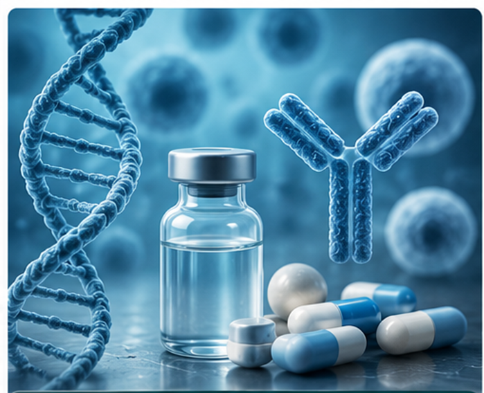
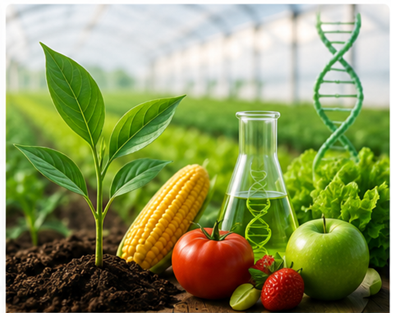
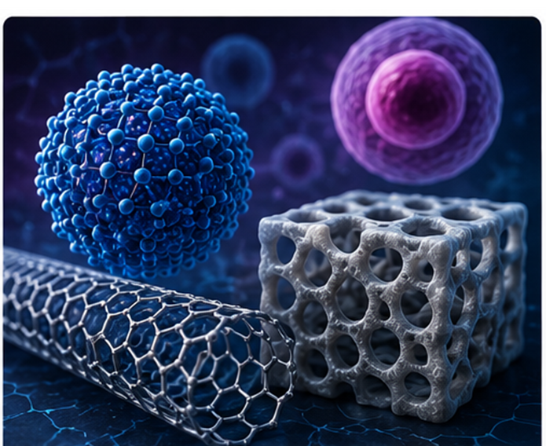
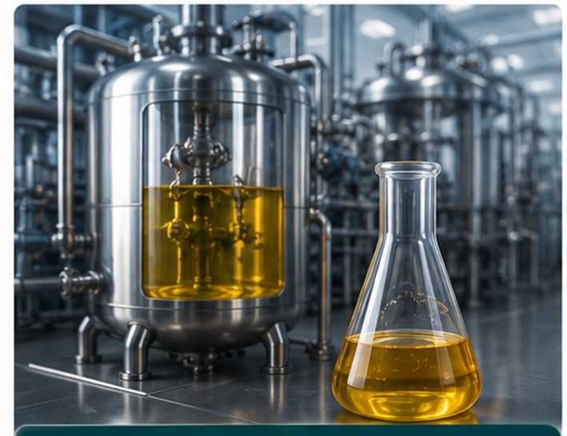
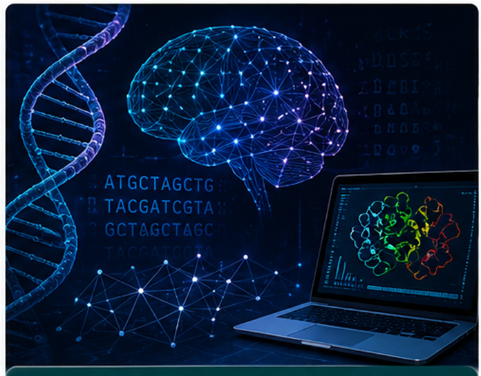
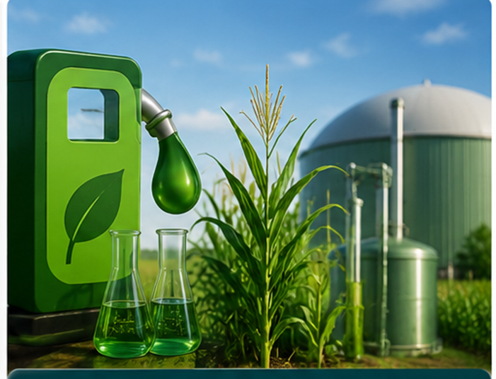
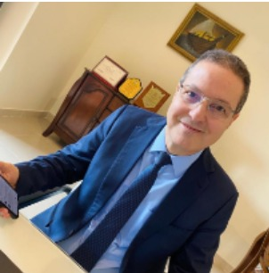
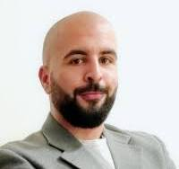
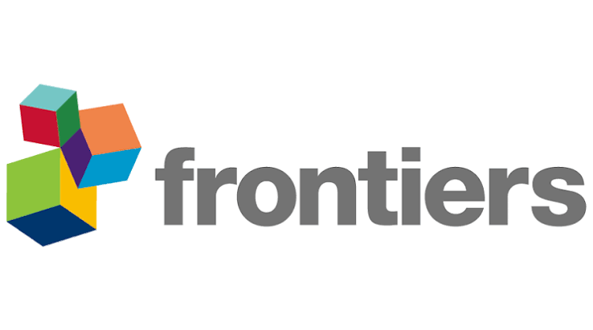

ICBB 2026
« Advancing science for a sustainable future through biotechnology »
The first International Conference on Biotechnology and Bioengineering brings together researchers, academics, industry professionals and students around scientific advances and real-world applications of biotechnology.
About ICBB
The 1st International Conference on Biotechnology and Bioengineering (ICBB 2026) will be held from December 6-8, 2026, at the École Nationale Supérieure de Biotechnologie (ENSB) in Constantine, Algeria, under the theme: "Advancing Science for a Sustainable Future Through Biotechnology".
ICBB 2026 is an international forum dedicated to advancing scientific exchange, innovation, and collaboration in biotechnology and bioengineering. It will bring together researchers, academics, healthcare professionals, industry representatives, and students from around the world to share scientific discoveries, explore emerging technologies, and strengthen interdisciplinary collaborations.
The scientific program of ICBB 2026 brings together a dynamic spectrum of biotechnology and life sciences, where fundamental discoveries meet real-world applications. From advances in biomedical and pharmaceutical research to innovations in plant, food and agricultural systems; from the frontiers of nanobiotechnology and advanced biomaterials to breakthroughs in industrial biotechnology and fermentation sciences; and extending to the transformative fields of bioinformatics, artificial intelligence and computational biology, as well as bioenergy, biofuels and sustainable biotechnology; the program reflects the full breadth of modern biotechnology. Through keynote lectures, invited talks, oral presentations, and poster sessions, participants will engage in high-level scientific exchange addressing key global challenges in health, food security, sustainable agriculture, environmental protection, and bioeconomy.
We warmly invite researchers, students, and industry professionals to join us in Constantine for three days of scientific excellence, networking, and collaboration, as we work together to advance biotechnology for a sustainable future.
Six submission tracks

Biomedical and Pharmaceutical Biotechnology
Diagnostics, therapeutics, and vaccines — drug discovery, biomarker identification, engineered therapeutic systems, and experimental models for human disease.

Plant, Agri-Food Biotechnology
Crop improvement, plant genetics, food safety, and sustainable agriculture — biofortification, microbial applications, and climate-resilient systems.

Nanobiotechnology and Advanced Biomaterials
Nanoscale systems and materials interacting with biology — targeted drug delivery, smart biomaterials, biosensors, and nanostructured medical devices.

Industrial Biotechnology and Fermentation Sciences
Large-scale biological production — microbial fermentation, enzyme production, bioprocess engineering, and sustainable production of chemicals and enzymes.

Bioinformatics, AI and Computational Biology
Computational approaches to biology — biological and biomedical data analysis, genomic data analysis, AI-driven disease prediction, protein structure modeling, and systems biology.

Bioenergy, Biofuels and Sustainable Biotechnology
Renewable biological energy and sustainable technologies — biofuel production, waste-to-energy systems, microbial energy conversion, and circular bioeconomy.
Organizing committee
Prof. Douadi Khelifi, Director of ENSB
Prof. Mourad Belkhelfa, CEO of Saidal
Dr. Mohammed Berkani, ENSB
Dr. Mohamed Adel Kechkar, ENSB
Organising committee
Keynote speakers

Prof. Said Dermime
National Center for Cancer Care and Research, Qatar
Research profile →Scientific program
The detailed program, including the order of plenary, oral and poster sessions, will be published progressively as the conference approaches.
Co-located events
Bioinformatics & computational biology workshop

A workshop dedicated to bioinformatics and computational biology will be held alongside ICBB 2026.
Organised by: Dr. Amazigh Mokhtari, Principal Data Scientist, Sanofi · Dr. Mohamed Adel Kechkar, Associate Professor, ENSB · Dr. Tarek Alloui, Associate Professor, ENSB
Special issue

Frontiers in Bioengineering and Biotechnology
Selected authors will be invited to submit an extended version of their work for publication in a special issue of Frontiers in Bioengineering and Biotechnology.
Visit the journal →Scientific committee
Members
How to submit
Manuscript submission consists of two straps:
- First, authors are required to submit an abstract.
- If the abstract is accepted, authors will be invited to submit a short paper.
To ensure a smooth submission process, please follow the guidelines outlined below.
Abstract preparation guidelines
The abstract is the primary document used by the Scientific Committee for the initial evaluation of submitted work.
- Abstracts must be written in English and must not exceed 400 words (excluding the title, authors, affiliations, and keywords).
- They must be clear, concise, and well-structured using the following headings: Background, Objective, Methods, Results, and Conclusion.
- The abstract should provide sufficient scientific information to enable reviewers to assess the originality, methodology, scientific significance, and overall quality of the research.
- The Results section should include quantitative findings and appropriate statistical analyses whenever possible.
- Abstracts stating only that "results will be discussed" or lacking sufficient scientific information may receive a lower evaluation score or may not be considered for acceptance.
- Authors should provide 3–5 keywords.
Studies involving human participants or animals must comply with applicable ethical standards and have obtained the necessary ethical approvals from the relevant institutional review board or ethics committee, where applicable. Authors are responsible for ensuring ethical compliance. Failure to meet these requirements may result in exclusion from the conference proceedings, even if the abstract has been accepted for presentation.
Submit my abstract on CMT →Key dates
Registration fees
| Category | National — early | National — regular | International — early | International — regular |
|---|---|---|---|---|
| PhD students | 5,000 DZD | 7,000 DZD | €100 | €150 |
| Faculty / academics | 10,000 DZD | 15,000 DZD | €200 | €300 |
| Researchers | 10,000 DZD | 15,000 DZD | €200 | €300 |
| Industry participants | 15,000 DZD | 20,000 DZD | €500 | €700 |
| No scientific contribution | 7,000 DZD | 12,000 DZD | — | — |
National rates apply to participants affiliated with an Algerian institution. International rates apply to participants affiliated with an institution outside Algeria. Payment instructions are sent by the organising committee in the acceptance e-mail.
Payment
Upon acceptance of the abstract, participants will be required to complete their registration by paying the applicable fees, as indicated in the acceptance email sent by the Organizing Committee. Detailed instructions regarding payment methods and procedures will be provided in the same email.


Frequently asked questions
When is ICBB 2026?
ICBB 2026 will be held from 6 to 8 December 2026.
Where is ICBB 2026 held?
The conference takes place in Constantine, Algeria, at the École Nationale Supérieure de Biotechnologie.
Why should I attend ICBB 2026?
ICBB 2026 provides a platform to discover the latest advances in biotechnology and bioengineering, present your research, exchange ideas with international experts, establish new collaborations, and expand your professional network through keynote lectures, scientific sessions, poster presentations, and networking events.
How do I submit an abstract?
Abstracts must be submitted online. Simply click the submission link on the conference website to access the submission site and follow the instructions.
What is the deadline for abstract submission?
Please refer to the Key dates section for the latest submission deadlines.
Can I submit more than one abstract?
Yes. Authors may submit multiple abstracts.
Will accepted abstracts be published?
Accepted abstracts will be published in the conference proceedings after peer review.
How are abstracts evaluated?
All submissions undergo peer review by members of the Scientific Committee based on originality, scientific quality, relevance to the conference themes, and clarity.
When does registration open?
Please refer to the Registration section for information on Early Bird and Regular registration periods, registration fees, and deadlines.
Can I pay the registration fee on-site?
Unfortunately, registration fees must be paid in advance through the official registration system to confirm participation.
What is included in the registration fee?
Access to all scientific sessions, conference materials, electronic conference proceedings, coffee breaks, lunches, access to poster sessions, and a Certificate of Participation.
Can I modify my abstract after submission?
Minor modifications to submitted abstracts may be made before the submission deadline. After the deadline, changes will generally not be accepted. However, in exceptional cases, authors may contact the Organizing Committee to request corrections, which will be considered on a case-by-case basis.
Can I transfer my registration to another participant?
No. Registration is personal and non-transferable.
What is the cancellation and refund policy?
Cancellation requests must be submitted in writing to the conference organizing committee. Refunds will be processed according to the following schedule:
Cancellation before 5 November 2026: 100% refund of the registration fee (excluding bank transaction charges, if applicable).
Cancellation on or after 5 November 2026: No refund will be provided.
Can I attend only one day?
Registration is available for the full conference only. Certificates of Participation will only be issued at the end of the conference.
Can a co-author present the work on my behalf? Will the certificate still be issued in my name?
Yes. A co-author may present the work if the registered presenting author is unable to attend. The certificate will be issued to the actual presenter, while authorship credit remains as indicated in the submitted abstract.
Can I attend ICBB 2026 without presenting scientific work?
Yes. Participants may attend without presenting a paper and are welcome to attend all scientific sessions and activities. All registered participants will receive a Certificate of Attendance.
Will participants receive a certificate?
Yes. All registered participants will receive a printed Certificate of Participation on the last day of the conference.
Will there be awards for the best oral and poster presentations?
Yes. Awards will be given for the best oral and poster presentations to recognize outstanding scientific contributions.
Who can I contact for scientific questions?
For scientific inquiries, please contact the conference organizing committee using the contact information provided on the conference website. Your questions will be forwarded to the appropriate members of the Scientific Committee for review and response.
Is Algeria a safe destination for international visitors?
Yes. Algeria is generally considered a safe and welcoming destination for international visitors. The organizing committee will provide support to ensure a smooth and safe experience in Constantine.
Do I need a visa to travel to Algeria?
Visa requirements depend on your nationality. Participants are advised to consult the nearest Algerian embassy or consulate well in advance.
Can the organizers provide an invitation letter?
Yes. Invitation letters will be issued to registered participants upon request for visa application purposes.
Will the conference recommend hotels?
Yes. A list of recommended hotels near the conference venue is available below:
Hotel Errafie — Google Maps: 7H4J+WX4, UV 07, Lot 15, Ali Mendjeli, El Khroub
Dortoir Le Pic — Google Maps: 7H4J+JW, El Khroub
Hôtel Rossignol — Google Maps: 7H7R+8J, El Khroub
Can I present my work at the conference without publishing it in the proceedings?
Yes. Authors who do not wish to have their abstract or full paper included in the conference proceedings may request exclusion from the proceedings during the submission or registration process. Their work may still be presented at the conference, subject to acceptance by the Scientific Committee.
Get in touch
National Higher School of Biotechnology, University of Constantine 3 — Salah Boubnider, Ali Mendjeli New Town, Constantine.